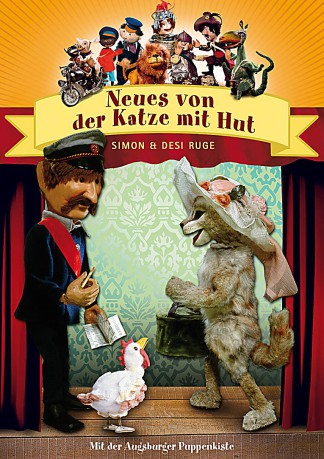

")
 
 IMDB-Wertung: 7.8 / 10
IMDB-Wertung: 7.8 / 10  Metascore:
Metascore: 
Jahr: 1982
Dauer: undefiniert Minuten
FSK:
Land: West-Deutschland Studio: S.A.D. Home EntertainmentTonspuren:
Untertitel:
Auflösung: SD (720x576 (PAL DVD)) Größe: 1157 MB
Regisseur: Sepp Strubel
Drehbuch: Desi Ruge, Simon Ruge, Sepp Strubel
Soundtrack:
Darsteller:
Datei: X:\Kinder Serien\Augsburger Puppenkiste\Katze mit Hut\Augsburger Puppenkiste - Katze mit Hut.mp4 seit 16.11.2019
Festplatte: Kinder-Filme+Trick
 Es gibt insgesamt 56 Filme in der Gruppe 'Kinder Serien'
Es gibt insgesamt 56 Filme in der Gruppe 'Kinder Serien'